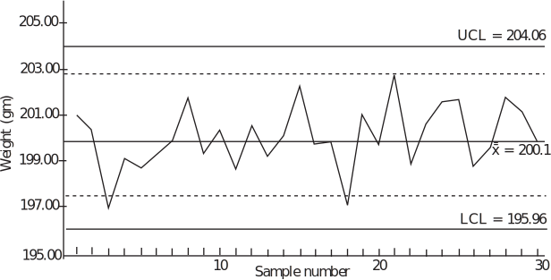

1 Quality control
Background
Techniques and methods for checking the quality of materials and the building of houses, temples, monuments and roads have been used over the centuries. For example, the ancient Egyptians had to make and use precise measurements and adopt very high standards of work in order to build the Pyramids. In the Middle Ages, the Guilds were established in Europe to ensure that new entrants to the craft/trade maintained standards. The newcomer was required to serve a long period of apprenticeship under the supervision of a master craftsman, and had to demonstrate his ability to produce work of the appropriate quality and standard before becoming a recognized tradesman. In modern times the notion of quality has evolved through the stages outlined below.
Inspection
The Industrial Revolution introduced mass production techniques to the workplace. By the end of the 19th century, production processes were becoming more complex and it was beyond the capabilities of a single individual to be responsible for all aspects of production. It is impossible to inspect quality into a product in the sense that a faulty product cannot be put right by means of inspection alone. Statistical quality control can and does provide the environment within which the product is manufactured correctly the first time. A process called acceptance sampling improves the average quality of the items accepted by rejecting those items which are of unacceptable quality. In the 1920s, mass production brought with it the production line and assembly line concepts. Henry Ford revolutionised car production with the introduction of the mass production of the ‘Model T.’
Mass production resulted in greater output and lower prices, but the quality of manufactured output became more variable and less reliable. There was a need to tackle the problem of the production of goods and parts of a fixed quality and standard. The solution was seen to be in the establishment of inspection routines, under the supervision of a Quality Inspector. The first inspection procedures required the testing of the entire production - a costly, time consuming and inefficient form of sorting out good and defective items.
Quality Control
The Second World War brought with it the need for defect-free products. Inspection departments now came to control the production process, and this resulted in the conformance to set specifications (the reduction of variability and the elimination of defects) being monitored and controlled throughout production. Quality Control departments were separate from, and independent of, the manufacturing departments.
Quality Assurance
In turn, Quality Control evolved into Quality Assurance. The function of Quality Assurance is to focus on assuring process and product quality through operational audits, the supplying of training, the carrying out of technical analysis, and the giving of advice on quality improvement. The role of Quality Assurance is to consult with the departments (design and production for example) where responsibility for quality actually rests.
Total Quality Management
Quality Assurance has given way to Company Wide Quality Management or Total Quality Management. As the names imply, quality is no longer seen to be the responsibility of a single department, but has become the responsibility and concern of each individual within an organisation. A small executive group sets the policy which results in targets for the various sections within the company. For example, line management sets ‘do-able’ objectives; engineers to design attractive, reliable, and functional products; operators to produce defect-free products and staff in contact with customers to be prompt and attentive. Total Quality Management aims to measure, detect, reduce, eliminate, and prevent quality lapses, it should include not only products but also services, and address issues like poor standards of service and late deliveries.
Statistical Quality Control
As a response to the impracticality of inspecting every production item, methods involving sampling techniques were suggested. The behaviour of samples as an indicator of the behaviour of the entire population has a strong statistical body of theory to support it.
A landmark in the development of statistical quality control came in 1924 as a result of the work of Dr. Walter Shewhart during his employment at Bell Telephone Laboratories. He recognised that in a manufacturing process there will always be variation in the resulting products. He also recognized that this variation can be understood, monitored, and controlled by statistical procedures. Shewhart developed a simple graphical technique - the control chart - for determining if product variation is within acceptable limits. In this case the production process is said to be ‘in control’ and control charts can indicate when to leave things alone or when to adjust or change a production process. In the latter cases the production process is said to be ‘out of control.’ Control charts can be used (importantly) at different points within the production process.
Other leading pioneers in the field of quality control were Dr. H. Dodge and Dr. H. Romig. Shewhart, Dodge and Romig were responsible for much of the development of quality control based on sampling techniques. These techniques formed what has become known as ‘acceptance sampling.’
Although the techniques of acceptance sampling and control charts were not widely adopted initially outside Bell, during the 1920s many companies had established inspection departments as a means of ensuring quality.
During the Second World War, the need for mass produced products came to the fore and in the United States in particular, statistical sampling and inspection methods became widespread. After the Second World War, the Japanese in particular became very successful in the application of statistical techniques to quality control and in the United States, Dr. W.E. Deming and Dr. J.M. Duran spread the use of such techniques further into U.S. industry.
Statistical Process Control
The aim of statistical process control is to ensure that a given manufacturing process is as stable (in control) as possible and that the process operates around stated values for the product with as little variability as possible. In short, the aim is the reduction of variability to ensure that each product is of a high a quality as possible. Statistical process control is usually thought of as a toolbox whose contents may be applied to solve production-related quality control problems. Essentially the toolbox contains the major tools called:
- the Histogram;
- scatter diagrams;
- the Pareto chart;
- check sheets;
- cause-and-effect digrams;
- control charts;
- defect-concentration diagrams;
- experimental design methods;
- sampling inspection.
Note that some authors argue that experimental design methods should not be regarded as a statistical process control tool since experimental design is an active process involving the deliberate change of variables to determine their effect, while the other methods are based purely on the observation of an existing process.
Control charts are a very powerful tool in the field of statistical process control. Before looking in some detail at control charts in general we will look at the relationship between specification limits and tolerance limits since this can and does influence the number of defective items produced by a manufacturing process. It is this quantity that control charts seek to minimize.
Tolerance Limits and Specifications
An example of a specification for the manufacture of a short cylindrical spacer might be:
diameter: cm; length: cm.
Even though the differences here are the same ( in the case of the diameters and in the case of the lengths), there is no reason why this should always be so. These limits are called the specification limits. During manufacture, some variation in dimensions will occur by chance. These variations can be measured by using the standard deviation of the distribution followed by the dimensions produced by the manufacturing process. Figure 1 below shows two normal distributions each with so-called natural tolerance limits of either side of the mean.
Taking these limits implies that virtually all of the manufactured articles will fall within the natural tolerance limits. Notice that in the top part of the figure the specification limits are rather wider than the natural tolerance limits and that little if any wastage will be produced. One could argue that in this case the manufacturing process is actually better than it needs to be and that this may carry unnecessary costs. In the lower part of the figure the specification limits are narrower than the natural tolerance limits and wastage will occur In general, a production process should aim to equate the two types of limits to minimize both costs and wastage.
Control Charts
Any production process is subject to variability. Essentially, this variability falls into two categories called chance causes and assignable causes . A production process exhibiting only chance causes is usually described as being ‘in control’ or ‘in statistical control’ whereas a production process exhibiting assignable causes is described as being ‘out of control.’ The basic aim of control charts is the improvement of production processes via the detection of variability due to assignable causes. It is then up to people such as process operators or managers to find the underlying cause of the variation and take action to correct the process. Figure 4 below illustrates the point.
Figure 4
A control chart basically consists of a display of ‘quality characteristics’ which are found from samples taken from production at regular intervals. Typically the mean, together with a measure of the variability (the range or the standard deviation) of measurements taken from the items being produced may be the variables under consideration. The appearance of a typical control chart is shown below in Figure 5.
The centre line on Figure 5 represents the ideal value of the characteristic being measured. Ideally, the points on the figure should hover around this value in a random manner indicating that only chance variation is present in the production process. The upper and lower limits are chosen in such a way that so long as the process is in statistical control, virtually all of the points plotted will fall between these two lines. Note that the points are joined up so that it is easier to detect any trends present in the data. At this stage, a note of caution is necessary. The fact that a particular control chart shows all of its points lying between the upper and lower limits does not necessarily imply that the production process is in control. We will look at this aspect of control charts in some depth later in this booklet. For now simply note that even points lying within the upper and lower limits that do not exhibit random behaviour can indicate that a process is either out of control or going out of control.
Figure 5 :
It is also worth noting at this stage that there is a close connection between control charts and hypothesis testing. If we formulate the hypotheses:
the process is in control
the process is not in control
then a point lying with the upper and lower limits is telling us that we do not have the evidence to reject the null hypothesis and a point lying outside the upper and lower limits is telling us to reject the null hypothesis. From previous comments made you will realize that these statements are not an absolute truth but that they are an indicative truth.
Control charts are very popular in industry. Before looking at particular types of control charts, the following reasons are given for their popularity.
- They are simple to use. Production process operators do not need to be fluent in statistical methods to be able to use control charts.
- They are effective. Control charts help to keep a production process in control. This avoids wastage and hence unnecessary costs.
- They are diagnostic in the sense that as well as indicating when adjustments need to be made to a process, they also indicate when adjustments do not need to be made.
- They are well-proven. Control charts have a long and successful history. They were introduced in the 1920s and have proved themselves over the years.
- They provide information about the stability of a production process over time. This information is of interest to production engineers for example. A very stable process may enable fewer measurements to be taken - this has cost implications of course.
Control chart construction
In order to understand how control charts are constructed, consider the following scenario.
Part of a production line used by a manufacturer of instant coffee involves the use of a machine which fills empty packets with coffee. The filler is set to fill each empty packet with 200 grams of coffee. As this is an electro-mechanical process, repeated over a long period of time, it is inevitable that there will be some degree of variation in the amounts of coffee dispensed. The question that production engineers will need to answer is “Is the variation sufficient to result in a significant ‘underfilling’, or ‘overfilling’, of the packets?”
The following data (which represent the weights of a sample of 50 packets of 200 grams of coffee) are obtained from the production line:
| 200.0 | 197.8 | 200.1 | 200.6 | 198.7 |
| 198.7 | 203.4 | 201.3 | 199.8 | 200.6 |
| 202.2 | 196.4 | 199.2 | 199.9 | 200.3 |
| 198.2 | 201.4 | 202.8 | 201.3 | 203.6 |
| 201.9 | 199.7 | 198.5 | 199.8 | 202.4 |
| 201.3 | 201.2 | 198.5 | 196.4 | 199.2 |
| 202.4 | 202.4 | 197.9 | 201.3 | 200.8 |
| 197.8 | 202.0 | 200.7 | 201.1 | 199.7 |
| 201.3 | 197.6 | 200.9 | 201.6 | 196.2 |
| 199.7 | 203.1 | 203.1 | 200.9 | 199.2 |
In this example, the data should be read from top left to bottom right, down the columns, that is from 200.0, 198.7, 202.2 and so on to 199.2.
Using Microsoft Excel, the data give the following numerical summaries:
grams,
grams
Note that the summaries refer to a sample but, as the sample size is large ( ), these values may be taken as estimates for the population parameters and we shall take their values as:
grams,
grams
A plot of the data from Excel is shown in Figure 5.
Figure 6 :
To the plotted series of data are added:
- a horizontal line representing the process mean of 200.30 grams
- two further horizontal lines representing the upper and lower control limits. The values of these limits are given by and are calculated as 205.8 and 194.8
These lines are called the Upper Control Limit (UCL) and the Lower Control Limit (LCL).
This process results in the Figure 7 below.
Figure 7 :
In a production process, samples are taken at regular intervals, say every 10 mins., 15 mins., 30 mins, and so on, so that at least 25 samples (say) are taken. At this stage, we will be able to detect trends - looked at later in this workbook - in the data. This can be very important to production engineers who are expected to take corrective action to prevent a production process going out of control. The size of the sample can vary, but in general . Do not confuse the number of samples taken, with the sample size .
The centre line, denoted by is given by the mean of the sample means
where is the number of samples. is used as an estimator for the population mean .
Given that the sample size is the upper and lower control limits are calculated as
These limits are also known as action limits ; if any sample mean falls outside these limits, action has to be taken. This may involve stopping the production line and checking and/or re-seting the production parameters.
In the initial example, a single sample of size was used. In reality, with samples being taken at short time intervals, e.g. every 10 min., there is not sufficient time to weigh this many packages. Hence, it is common to use a much smaller sample size, e.g. or .
Under these circumstances, it is not sensible (very small sample size may give inaccurate results) to use as an estimate for the standard deviation of the population. In a real manufacturing process, the value of is almost always unknown and must be estimated.
Estimating the population standard deviation.
It is worth noting that there is, in practice, a distinction between the initial setting up of a control chart and its routine use after that. Initially, we need a sufficiently large sample to facilitate the accurate estimation of the population standard deviation . Three possible methods used to estimate are:
- Calculate the standard deviations of several samples, and use the mean of these values as an estimate for .
- Take a single, large size sample from the process when it is believed to be in control. Use the standard deviation of this sample as an estimate for . Note that this was the method adopted in the initial example.
-
In industry, a widely used method for obtaining an unbiased estimate for
uses the calculation of the average range
of the sample results. The estimate for
is then given by the formula:
where is a constant that depends on the sample size. For example, the Table given at the end of this Workbook, show that for .
The control limits can now be expressed in the form:
and, by a further simplification as:
A table for the constant are given at the end of this Workbook (Table 1).
Example 5
The following table shows the data obtained from 30 samples, each of size , taken from the ’instant coffee’ production line considered above. The table has been extended to show the mean and the range of each sample. Find the grand mean , the upper and lower control limits and plot the control chart. You are advised that all of the necessary calculations have been done in Excel and that you should replicate them for practice. You can, of course, use a dedicated statistics package such as MINITAB if you wish.
Solution
Using Excel, the following results are obtained:
Using these values, the control limits are defined as:
and
Figure 8
Note that if the process is in control, the probability that a sample mean will fall outside the control limits is very small. From the central limit theorem we know that the sample means follow (or at least approximately follow) a normal distribution and from tables it is easy to show that the probability of a sample mean falling outside the region defined by the control limits is about 0.3%. Hence, if a sample mean falls outside the control limits, there is an indication that there could be problems with the production process. As noted before the process is then said to be out of control and process engineers will have to locate the cause of the unusual value of the sample mean.
Warning limits
In order to help in the monitoring of the process, it is common to find additional warning limits which are included on the control chart. The settings for these warning limits can vary but a common practice involves settings based upon two standard deviations. We may define warning limits as:
Using the constant defined earlier, these limits may be written as
Example 6
Using the data from Example 5, find the warning limits and revise the control chart accordingly.
Solution
We know that , and that the sample size is 4. Hence:
The warning limits clearly occur at 202.71 and 197.31. The control chart now appears as shown below. Note that the warning limits in this case have been shown as dotted lines.
Figure 9

Detecting trends
Control charts can also be used to detect trends in the production process. Even when all of the sample means fall within the control limits, the existence of a trend can show the presence of one, or more, assignable causes of variation which can then be identified and brought under control. For example, due to wear in a machine, the process mean may have shifted slightly.
Trends are detected by considering runs of points above, or below, the centre line. A run is defined as a sequence of consecutive points, all of which are on the same side of the centre line.
Using a plus sign to indicate a point above, and a minus sign to indicate a point below, the centre line, the 30 sample means used as the worked examples above would show the following sequence of runs:
Considerable attention has been paid to the study of runs and theory has been developed. Simple rules and guidelines, based on the longest run in a chart have been formulated.
Listed below are eight tests that can be carried out on the chart. Each test detects a specific pattern in the data plotted on the chart. Remember that a process can only be considered to be in control if the occurrence of points above and below the chart mean is random and within the control limits. The occurrence of a pattern indicates a special cause for the variation, one that needs to be investigated.
The eight tests
- One point more than 3 sigmas from the centre line.
- Two out of three points in a row more than two sigmas from the centre line (same side)
- Four out of five points in a row more than 1 sigma from centre line (same side)
- Eight points in a row on the same side of the centre line.
- Eight points in a row more than 1 sigma either side of the centre line.
- Six points in a row, all increasing or all decreasing.
- Fourteen points in a row, alternating up and down.
- Fifteen points in a row within 1 sigma of centre line (either side)
The first four of these tests are sometimes referred as the Western Electric Rules. They were first published in the Western Electric Handbook issued to employees in 1956.
The -Chart
The control chart based upon the sample means is only one of a number of charts used in quality control. In particular, to measure the variability in a production process, the chart is used. In this chart, the range of a sample is considered to be a random variable. The range has its own mean and standard deviation. The average range provides an estimate of this mean, while an estimate of the standard deviation is given by the formula:
where and are constants that depend on sample size. The control limits for the -chart are defined as:
By the use of further constants, these control limits can be simplified to:
Values for and are given in the table at the end of this workbook. For values of the value of is zero.
Note that if the -chart indicates that the process is not in control, then there is no point in trying to interpret the -chart.
Returning to the data we have used so far, the control limits for the chart will be given by:
since the sample size is only 4. Effectively, the LCL is represented by the horizontal axis in the following chart.
Figure 10 :
Note that although the -chart indicated that the process was in control, the -chart shows that in two samples, the ranges exceed the UCL. Hence, no attempt should be made to interpret the -chart. Since the limits used in the -chart are based upon the value of , these limits will have little meaning unless the process variability is in control. It is often recommended that the -chart be constructed first and if this indicates that the process is in control then the -chart be constructed. However you should note that in reality, both charts are used simultaneously.
Further control charts
The -charts and the -charts considered above are only two of the many charts which are used in quality control. If the sample is of size then it may be better to use a chart based on the standard deviation, the -chart, for monitoring process variability. In practice, there is often little to choose between the -chart and the -chart for samples of size although it is worth noting that the -chart is easier to formulate thanks to the easier calculations.
Many control charts have a common appearance with a central line indicating a mean, a fixed setting, or perhaps a percentage of defective items, when the process is in control. In addition, the charts include control limits that indicate the bounds within which the process is deemed to be in control. A notable exception to this is the CUSUM chart. This chart is not considered here, but see, for example, Applied Statistics and Probability for Engineers , Montgomery and Runger, Wiley, 2002.
Pareto charts
A Pareto diagram or Pareto chart is a special type of graph which is a combination line graph and bar graph. It provides a visual method for identifying significant problems. These are arranged in a bar graph by their relative importance. Associated with the work of Pareto is the work of Joseph Juran who put forward the view that the solution of the ‘vital few’ problems are more important than solving the ‘trivial many’ . This is often stated as the ‘80 Ð 20 rule’ ; i.e. 20% of the problems (the vital few) result in 80% of the failures to reach the set standards.
In general terms the Pareto chart is not a problem-solving tool, but it is a tool for analysis. Its function is to determine which problems to solve, and in what order. It aims to identify and eliminate major problems, leading to cost savings.
Pareto charts are a type of bar chart in which the horizontal axis represents categories of interest, rather than a continuous scale. The categories are often types of defects. By ordering the bars from largest to smallest, a Pareto chart can help to determine which of the defects comprise the vital few and which are the trivial many. A cumulative percentage line helps judge the added contribution of each category. Pareto charts can help to focus improvement efforts on areas where the largest gains can be made.
An example of a Pareto chart is given below for 170 faults found in the process considered above where coffee is dispensed by an automatic machine.
Figure 12 :
Task!
The following table shows the data obtained from 30 samples, each of size , taken from a production line whose output is nominally 200 gram packets of tacks. Extend the table to show the mean and the range of each sample. Find the grand mean , the upper and lower control limits and plot the - and -control charts. Discuss briefly whether you agree that the production process is in control. Give reasons for your answer. You are advised to do all of the calculations in Excel or use a suitable statistics package.
| Sample | Weight | Weight | Weight | Weight | Sample | Weight | Weight | Weight | Weight |
| 1 | 201.3 | 199.8 | 201.4 | 200.3 | 16 | 196.5 | 202.0 | 199.2 | 202.3 |
| 2 | 198.6 | 201.3 | 199.7 | 201.8 | 17 | 199.0 | 200.7 | 200.1 | 199.3 |
| 3 | 198.9 | 199.8 | 200.1 | 199.8 | 18 | 196.6 | 198.9 | 201.1 | 200.3 |
| 4 | 202.4 | 203.1 | 199.6 | 199.2 | 19 | 200.6 | 199.4 | 201.8 | 201.0 |
| 5 | 194.7 | 201.2 | 197.5 | 201.1 | 20 | 199.4 | 201.0 | 200.8 | 197.6 |
| 6 | 200.8 | 199.8 | 200.3 | 196.2 | 21 | 199.8 | 203.1 | 201.6 | 204.3 |
| 7 | 199.5 | 201.4 | 200.6 | 199.2 | 22 | 201.3 | 196.8 | 197.6 | 199.6 |
| 8 | 202.3 | 203.1 | 199.2 | 201.3 | 23 | 200.6 | 199.4 | 200.4 | 200.8 |
| 9 | 205.4 | 198.3 | 197.9 | 198.5 | 24 | 197.9 | 202.2 | 201.0 | 200.1 |
| 10 | 199.0 | 202.2 | 197.1 | 202.8 | 25 | 203.0 | 201.6 | 201.4 | 200.8 |
| 11 | 189.7 | 200.1 | 202.6 | 201.9 | 26 | 200.1 | 199.8 | 201.7 | 199.3 |
| 12 | 201.6 | 197.5 | 204.5 | 196.4 | 27 | 198.2 | 201.4 | 198.6 | 201.1 |
| 13 | 198.6 | 198.8 | 199.7 | 200.4 | 28 | 200.6 | 202.8 | 210.0 | 202.8 |
| 14 | 202.6 | 199.2 | 199.0 | 199.2 | 29 | 200.3 | 201.3 | 201.6 | 201.3 |
| 15 | 203.3 | 203.1 | 200.8 | 201.7 | 30 | 197.9 | 201.3 | 198.3 | 201.4 |
The solution is given in two parts, first the -control chart and secondly the -control chart.
Part (i)
Using Excel, the following results are obtained: and
Using these values, the control limits are defined as:
and
The -chart is shown below.
Part (ii)
The control limits for the chart are given by:
since the sample size is 4, so that the LCL is represented by the horizontal axis in the following -chart.
Since one member of the -chart exceeds the UCL we cannot say that the process is in control and conclude that the source of the error should be investigated and corrected.
Table 1: Some constants used in the construction of control limits
| Sample Size | ||||
| 2 | 1.128 | 1.880 | 0 | 3.267 |
| 3 | 1.693 | 1.023 | 0 | 2.574 |
| 4 | 2.059 | 0.729 | 0 | 2.282 |
| 5 | 2.326 | 0.577 | 0 | 2.114 |
| 6 | 2.543 | 0.483 | 0 | 2.004 |
| 7 | 2.704 | 0.419 | 0.076 | 1.924 |
| 8 | 2.847 | 0.373 | 0.136 | 1.864 |
| 9 | 2.970 | 0.337 | 0.184 | 1.816 |
| 10 | 3.078 | 0.308 | 0.223 | 1.777 |
| 15 | 3.472 | 0.223 | 0.347 | 1.653 |
| 20 | 3.735 | 0.180 | 0.415 | 1.585 |
| 25 | 3.931 | 0.153 | 0.459 | 1.541 |